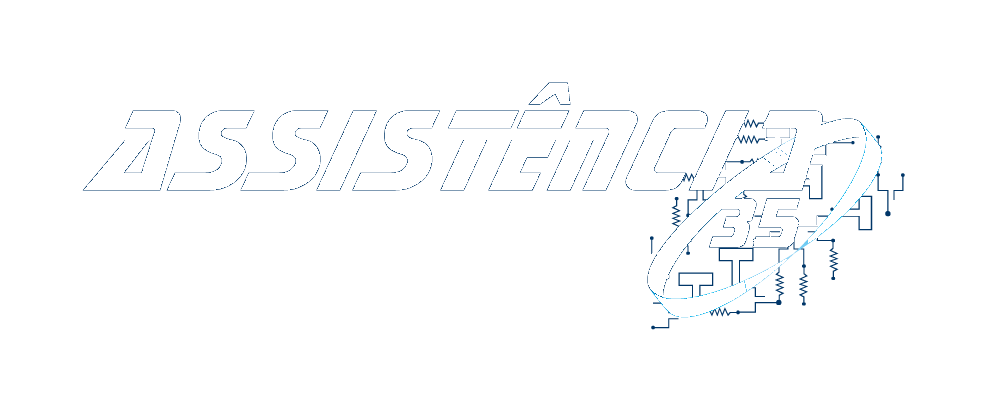

Biography
My name is Bruno Teixeira, BsC Informatics Engineering student @ ISEC - Coimbra.
Focused on learning Information Security and Systems Administration.
Always doing some side projects to improve my coding skills and learn new technologies on the way.
Skills
Languages
Python
C/C++
SQL
PHP
Technologies
Flask
Windows Server 2016
Experience
Technical Support / Service Desk @ CGI
Sep 2018 – Sep 2019 Porto
-
Phone contact with users,registration, classification and resolution of technical problems
-
Report of malfunctions to the area of competence
-
Preparation of inventories;
-
Working with:
-
JBoss & Jenkins
-
Remedy & CMDBUILD
-
SAP & SAP Fiori
-
Windows Server's & Print servers
Trainee - IT and Network department @ ISLA GAIA
Sep 2018 – Sep 2019 Gaia
-
Responsible for the computer maintenance of the IT park
-
Network mapping and print server control
Military @ Exército Português
Nov 2015 - Feb 2017 Braga
-
Pandur II 8x8 Driver
-
Shooter of the exploration section(2ºEREC)
Trainee - Hardware & Software Maintenance @ Assistência 35 LDA
Sep 2014 - Sep 2015 Porto

-
Repairing Hardware & Software
-
Troubleshoot/Maintenance of Tv's
Trainee - Hardware Maintenance @ DOTcenter
Sep 2013 - Sep 2014 Porto
-
Repairing Hardware & Software
-
Maintenance of produts from the cyber cafe
Education
BsC Informatics Engineering @ Instituto Superior de Engenharia de Coimbra
Sep 2019 - Currently Coimbra
CET Network and Systems @ CINEL
Sep 2017 - Sep 2018 Porto
DET Diploma
IT & Programming @ EISnt,High School
2013 - 2015 Porto